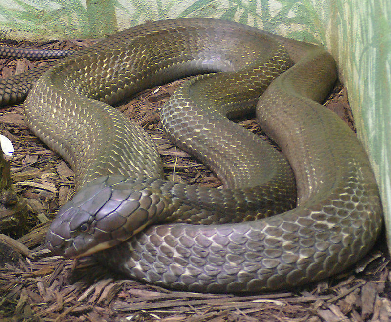

Cobra Real
(Ophiophagus Hannah)

Hábitat
Esta serpiente está ampliamente distribuida por el sur y sureste de Asia. Algunos de los países en que está presente son China, India, Tailandia, Indonesia y Filipinas.
Dentro de esta distribución, la cobra real habita principalmente en bosques no perturbados, aunque también puede aparecer en ecosistemas boscosos degradados, manglares o zonas agrícolas que conserven formaciones boscosas.
Caracteristicas
-
Este tipo de serpiente llega a medir hasta unos 6 metros de la cabeza hasta la punta de su cola.
-
Su cuerpo es de complexión delgada y de piel brillante, su cabeza es en forma de un diamante, con una lengua que le permite orientarse a la hora de destilar todo su mortal veneno, son muy rápidas, también inteligentes y ya no digamos los súper venenosas que resultan ser.
-
La cobra real es una de las serpientes más astutas que existen en el planeta puesto que utiliza estrategias de caza que le resulta en un 90% eficientes, por lo que se vale del camuflaje por lo que las víctimas se dan cuenta de su presencia cuando ya para ellas es demasiado tarde.
-
La cobra real es la serpiente más temida en África pero en la India es muy venerada muy a pesar de ser una serpiente tan letal.
-
La tala y la expansión de la agricultura provocan deforestación, situación que amenaza la integridad de la cobra real en su medio natural.